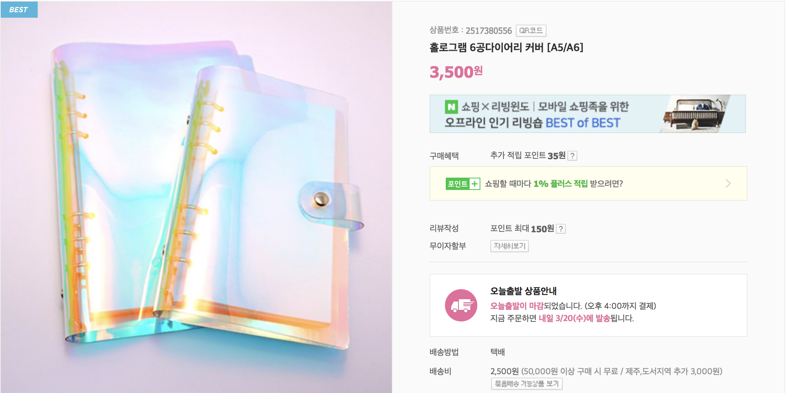
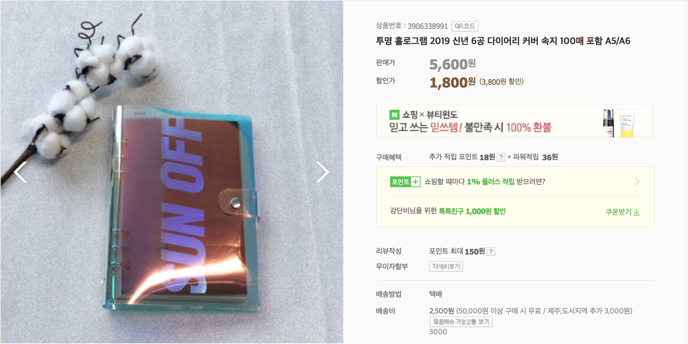
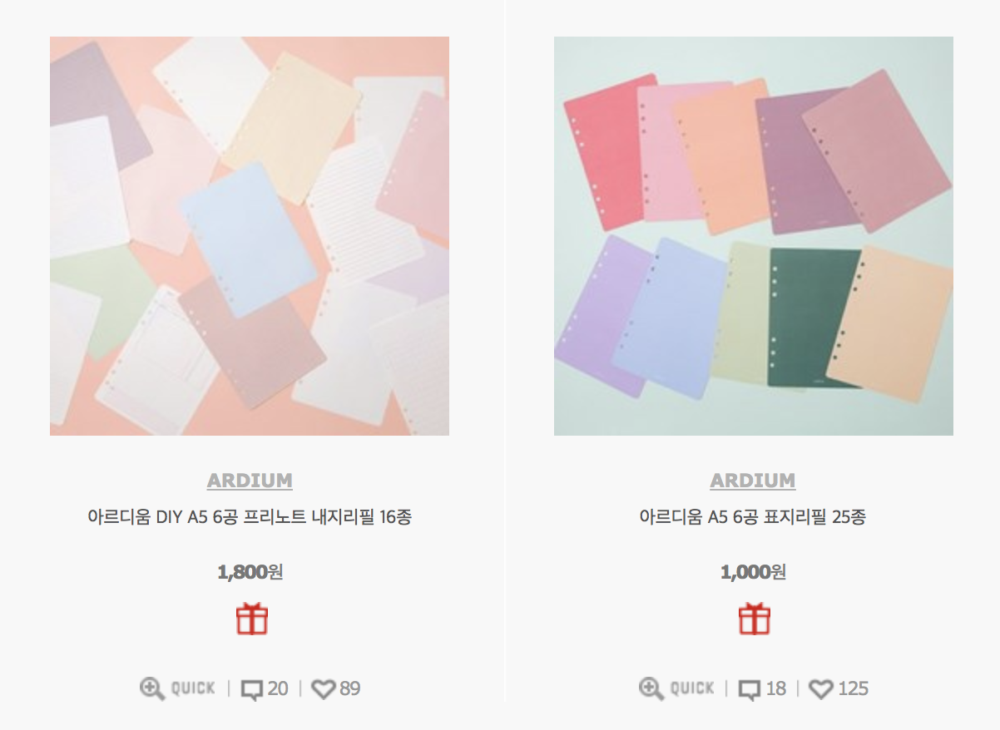
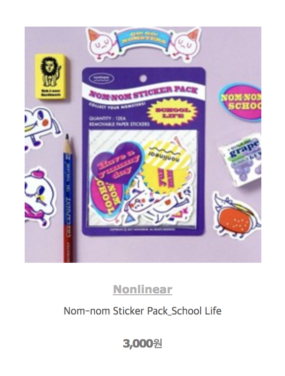
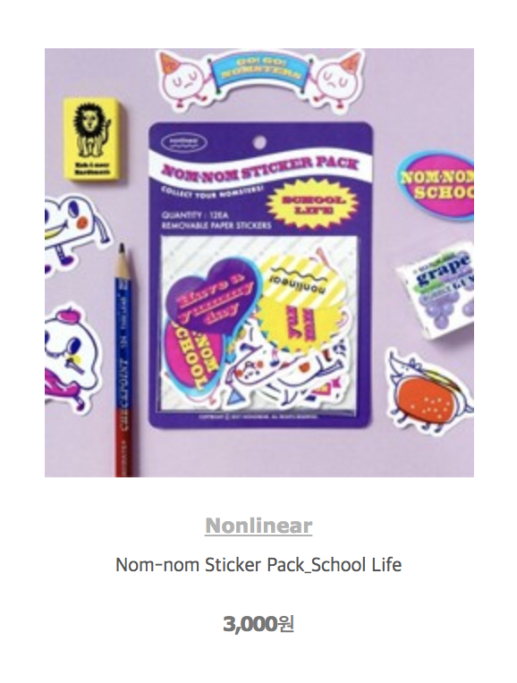

요즘시즌 핫한 키워드 2개. “다꾸(다이어리 꾸미기)” “레트로” 빠르게 변화가 오는 요즘시대에 아날로그적인 요소가 꾸준한 트렌드가 되고 있다. 다꾸세트를 판매하는 브랜드들이 많지만, 레트로 컨셉만을 집중한 세트는 거의 없다. 또한 다꾸에 필요한 아이템들을 개별구매 하게끔 하여 가격이 결코 적지 않거나, 배송비가 불어나는 경우가 많다. 컨셉에 맞는 속지, 스티커, 메모지 등을 하나의 팩으로 묶어 판매하는 패키지.
   
